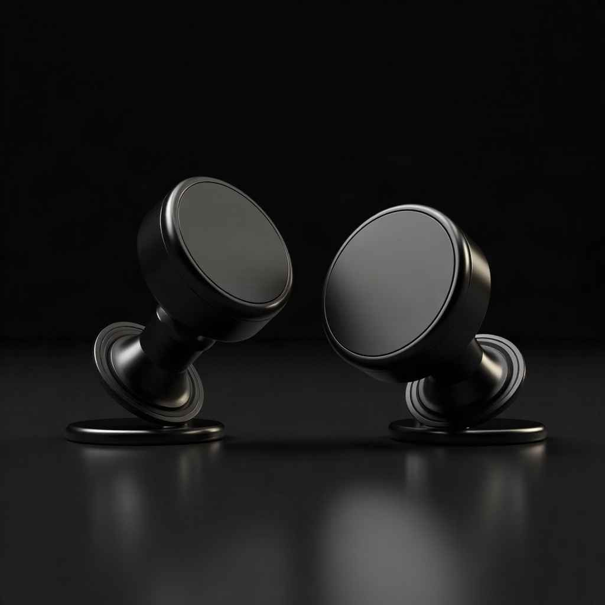
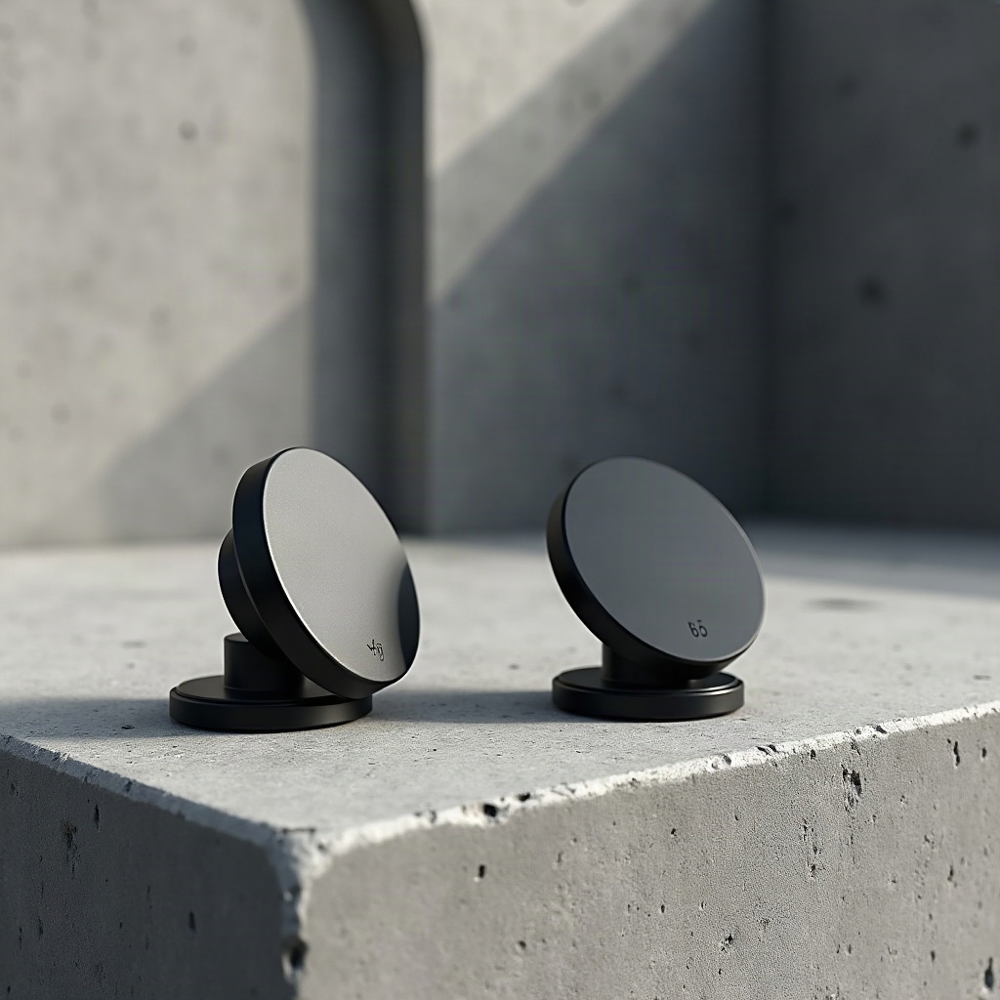
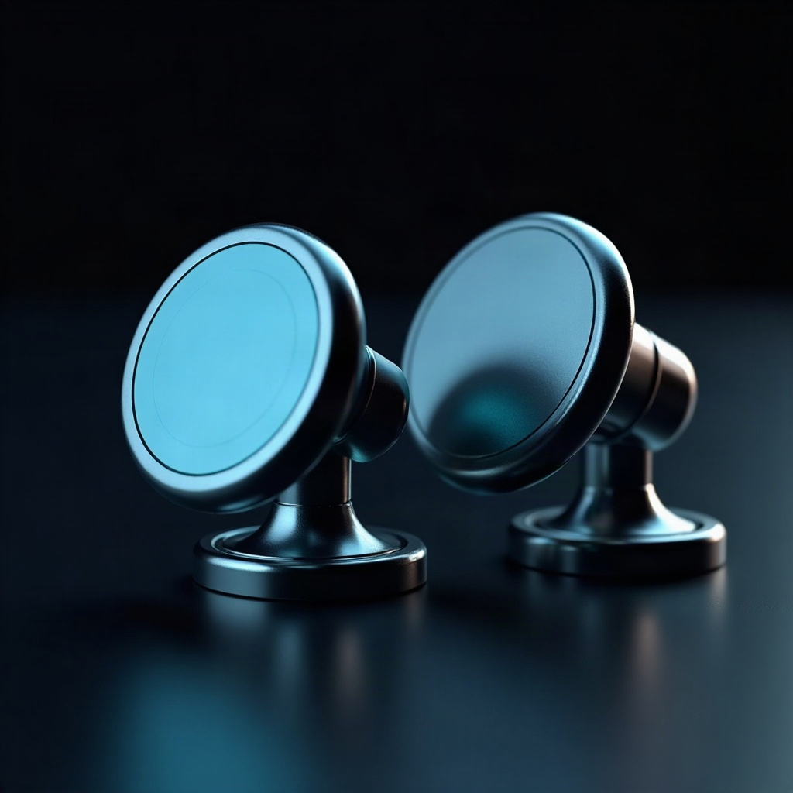
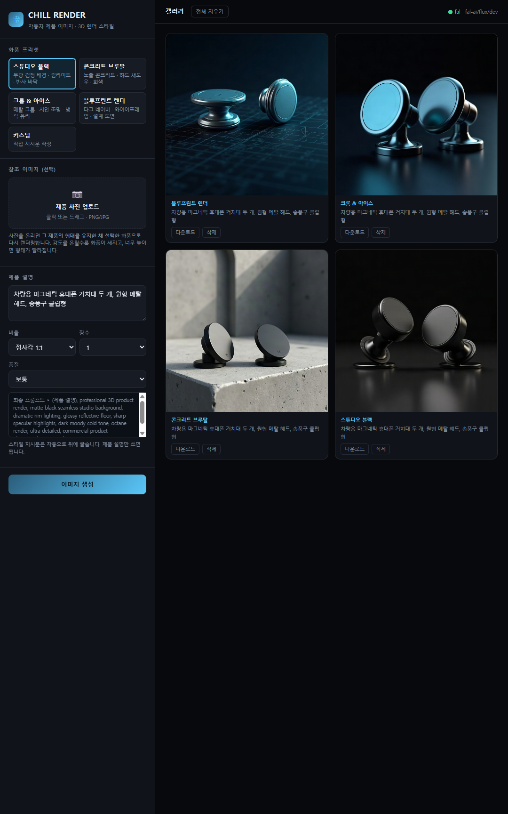

자동차 주변기기 제품 이미지를 위한 3D 렌더 생성기. 화풍 프리셋 4종을 미리 세팅해 두었고, 실물 사진을 올리면 형태를 유지한 채 그 화풍으로 다시 렌더링합니다.
제품 설명은 "차량용 마그네틱 휴대폰 거치대 두 개, 원형 메탈 헤드, 송풍구 클립형" 하나로 고정하고 화풍만 바꿔 생성한 결과입니다. 프리셋이 배경·조명·재질·색온도를 통째로 갈아끼웁니다.

무광 검정 배경에 림라이트. 반사 바닥으로 제품 실루엣만 남긴다. 상세페이지 대표컷용.

노출 콘크리트 위 하드 섀도우. 회색 팔레트로 산업적이고 도시적인 톤. SNS 피드용.

폴리시드 크롬과 냉각 유리. 시안·스틸블루 조명으로 테크 제품 느낌을 강조.
다크 네이비 배경에 와이어프레임 악센트. 설계 도면 느낌으로 스펙 소구할 때.
프리셋 4종 중 하나를 고릅니다. 직접 지시문을 쓰는 커스텀 모드도 있습니다.
한글로 써도 됩니다. 서버가 영문 프롬프트로 옮긴 뒤 화풍 지시문을 자동으로 뒤에 붙입니다.
최대 4장까지 한 번에. 갤러리에서 확대·다운로드하고, 필요 없는 컷은 바로 삭제합니다.
사진을 업로드하면 image-to-image 모드로 전환됩니다. 화풍 적용 강도 슬라이더로 원본 보존과 화풍 반영 사이를 조절합니다.

| 강도 | 결과 |
|---|---|
| 0.20 ~ 0.50 | 원본을 거의 유지. 배경이 안 바뀝니다. |
| 0.65 ~ 0.75 | 배경·조명·재질 교체, 형태는 유지. 권장 구간 |
| 0.80 이상 | 화풍은 강해지지만 얇은 부품·케이블이 뭉개집니다. |
흰 배경 제품컷을 어두운 스튜디오 톤으로 바꾸려면 배경까지 갈아엎어야 하므로 0.65부터 시작해 0.05씩 올리며 맞추는 것이 안전합니다.
cp .env.example .env # FAL_KEY 채우기 node server.js # http://localhost:3001
API 키는 서버에만 두고 브라우저로 내려보내지 않습니다. .env는 git에서 제외됩니다.
IMAGE_PROVIDER를 openai로 바꾸면 gpt-image-1로 전환됩니다.